Deploying OpenShift on OpenStack
Using Heat, Docker and Kubernetes to Simplify Your Life and Accelerate Development
Presented by
Diane Mueller, Red Hat OpenShift / @pythondj
Daneyon Hansen, Cisco / @daneyonhansen
Today's Agenda
|
|
Important Stuff
- Who We Are
- Why We Love OpenStack
- Where all the Cool Stuff is on GitHub
Assumptions
|
You are OpenStack Saavy, so..
|
Optional Skillz:
|
Part 1: PaaS On OpenStack?
Cloud Services

Why Put a PaaS on OpenStack?
- Improve IT's productivity
- Build and Deploy Applications Faster
- Maintain Flexibility
- Drive Down Cost of IT
- Meet Developer Expections

Automation, Automation, Automation
Infrastructure-as-a-Serviceis Not Enough
- Servers in the Cloud
- You build and manage everything
(OS, app servers, DB, application, etc.)
Software-as-a-Service
- Someone else's app, hosted in the cloud
- You are restricted to the features of the application—
You get what they give you.
SalesForce.com, Google Apps, iCloud
Platform-as-a-Service
- Quickly build (or try out) the applications that you need.
- Code applications that can live on a hybrid cloud.
- Leverage the ease, scale and power of the Cloud.
| Code | Deploy | Enjoy |
The 3 Flavors of OpenShift
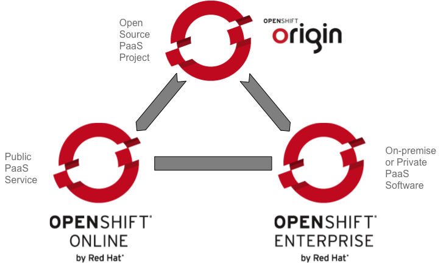What can you do with OpenShift?
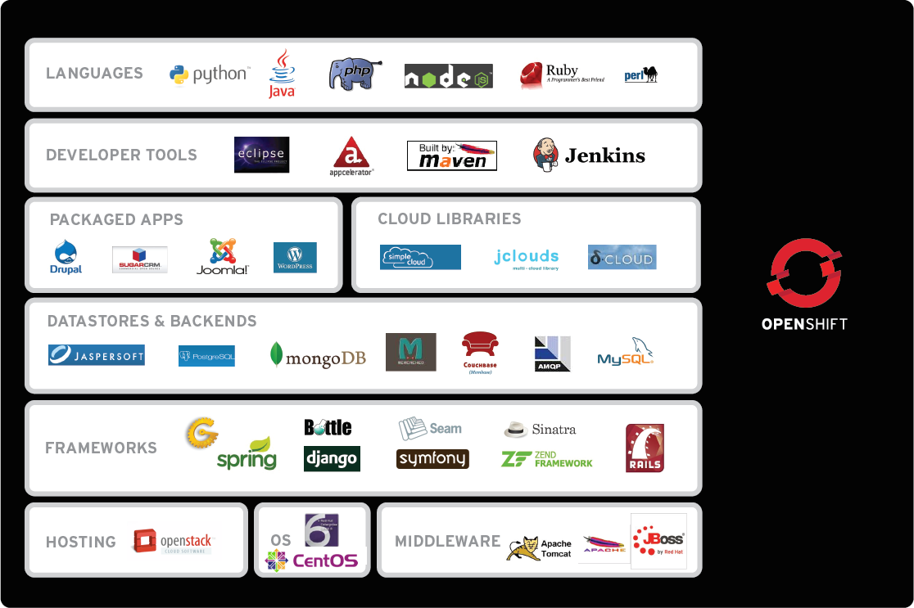How Does It Work?

It starts with multi-tenancy via linux containers...
How Does It Work?
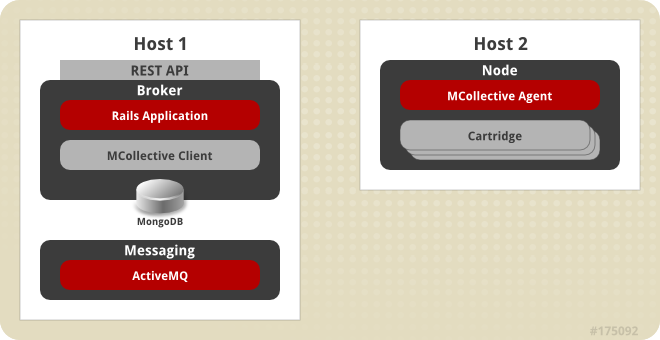...and adds central management with easily scaled deployments
Heat: Putting the PaaS in OpenStack
Cross Community Collaboration
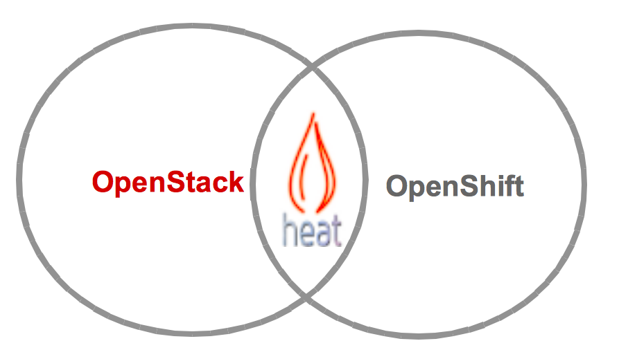
Heat Overview
- Provides AWS CloudFormation and native ReST API
- Abstract configuration of services into a simple template
- HA/auto-scaling/monitoring features
OpenShift Origin Heat Templates
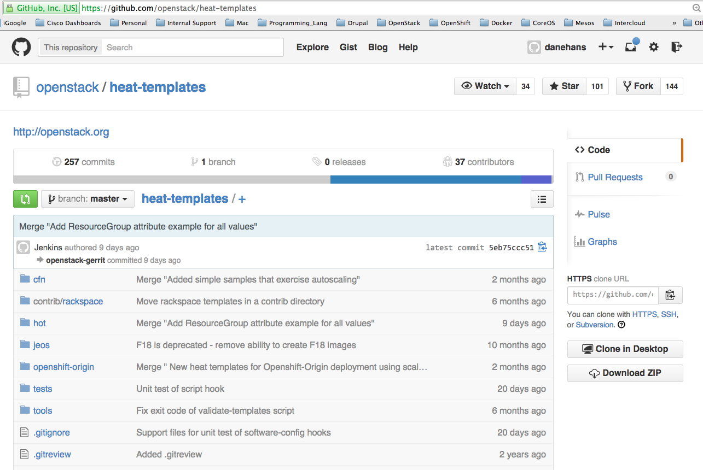OpenShift Enterprise Heat Templates
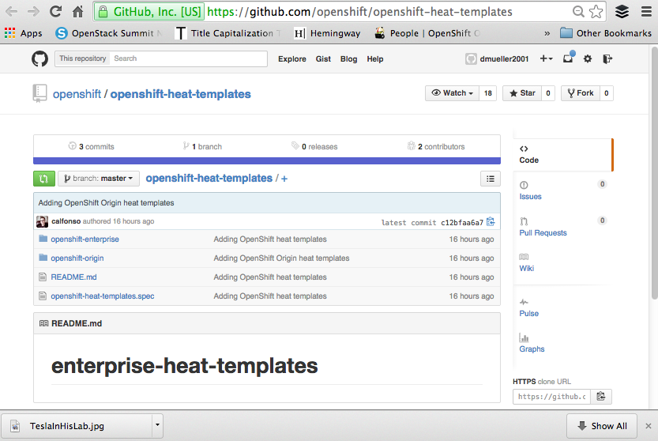Watch it at your leisure here on YouTube
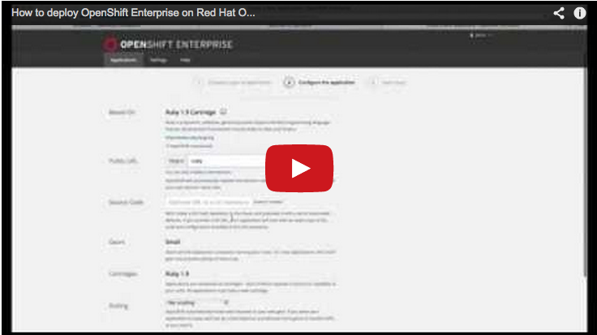
So Why a New PaaS?
- Live and learn
- New tools
- Sweet user experience + awesome technologies = Happiness
First PaaS Component: Docker
What is a Container?
 |
|
Images: More like git than tar
- Pull and Push
- Versions and Tags
diffa container
Versioning / Tagging
Find the image ID:
$ docker images
REPOSITORY TAG IMAGE ID CREATED VIRTUAL SIZE
danehans/nodesrv v1 fe809d275af3 18 hours ago 864.9 MB
node latest 32b8e915efd9 3 weeks ago 864.9 MB
centos centos6 b1bd49907d55 5 weeks ago 212.5 MB
centos centos7 b157b77b1a65 5 weeks ago 243.7 MB
centos latest b157b77b1a65 5 weeks ago 243.7 MBCreate the tag:
$ docker tag fe809d275af3 danehans/nodesrv:latest$ docker images danehans/nodesrv
REPOSITORY TAG IMAGE ID CREATED VIRTUAL SIZE
danehans/nodesrv v1 fe809d275af3 18 hours ago 864.9 MB
danehans/nodesrv latest fe809d275af3 18 hours ago 864.9 MBContainer Ops
Instantiate a Docker container with docker run:
$ docker run -i -t danehans/centos /bin/bash
bash-4.1# exit
exit
List running and exited docker processes with docker ps:
$ docker ps -l
CONTAINER ID IMAGE COMMAND CREATED STATUS NAMES
7c4ef3596fa5 danehans/centos:latest "/bin/bash" 49 seconds ago Exited (0) grave_newton"Diffing" a Container
Run a Docker image and perform some actions:
$ docker run -i -t --name="add_wget" danehans/centos /bin/bash
bash-4.1# yum install -y wget
...
bash-4.1# exitRun a diff on the container after it has run:
$ docker diff add_wget
C /.bash_history
C /etc
A /etc/wgetrc
C /tmp
C /usr
C /usr/bin
A /usr/bin/wget
C /usr/share
C /usr/share/doc
A /usr/share/doc/wget-1.12
...Docker Containers as Daemons
Start a container as a detached process with docker run -d:
$ docker run -d danehans/nginx:base
1aa9f0bd1418f951a590c12ad717ea8af639dd29969ee3f59dfd87da1da23c4e
$ docker ps
CONTAINER ID IMAGE COMMAND PORTS NAMES
1aa9f0bd1418 danehans/nginx:base "/bin/sh -c '/usr/sb 80/tcp elegant_bell
Use the -P flag to automatically map container ports to the Docker host:
$ docker run -d -P danehans/nginx:base
1c2e06d8f85e6e034dfd1f7e822b32ed3f4ddf1d5760011d1e84a88a589f50f3
$ docker ps
CONTAINER ID IMAGE COMMAND PORTS NAMES
1c2e06d8f85e danehans/nginx:base "/bin/sh -c '/usr/sb 0.0.0.0:49153->80/tcp loving_mcleanDocker Does:
- Portability
- Workflow
- Easy
- Speed
Docker Doesn't
- See beyond a single host
- Provision related containers as a unit
- Have capacity for handling mass configuration & deployment.
PaaS Component #2:
Kubernetes
Kuberenetes Terminology
| 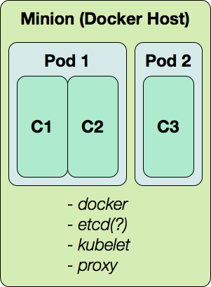 |
|
etcd

Minion Daemon:
kubelet

- Pod management
- Take instructions from the cluster master
Minion Daemon:
kube-proxy
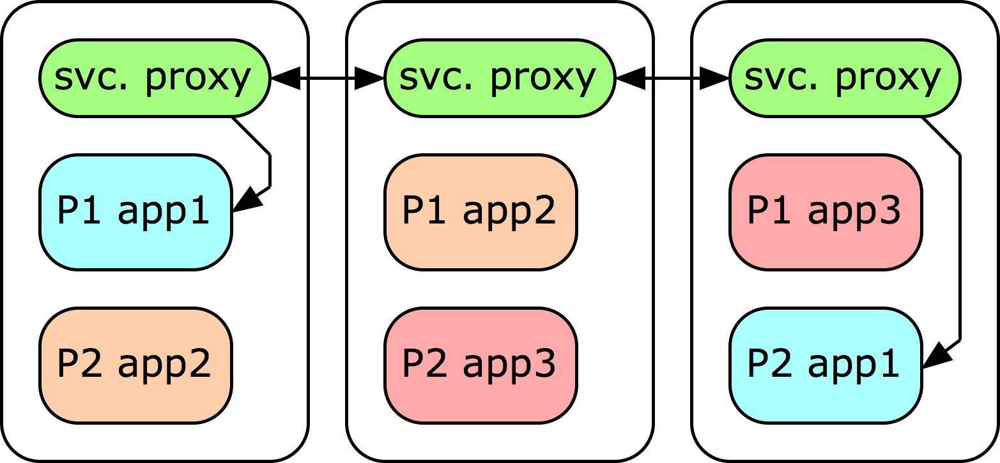
- The proxy service maps a common port on every minion to relevant pods across the entire cluster
- Relevant pods are chosen by comparing a label on the proxy definition to labels on the running pods
Cluster Management
| 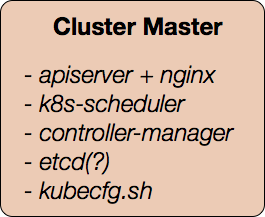 |
|
Kubernetes Doesn't
- Have a concept of a complete application.
- Have capacity for building and deploying Docker images from source code.
- Have a focus on a user or admin experience.
Bringing it All Together:
Applications =
Distinct Interconnected Services
- Distinct: App components must be abstracted so that they can evolve independently
- Interconnected: Every component should be easy to build, manage and deploy in concert
Applications in OpenShift 3
 |
|
Builds in OpenShift v3
|
|
Application Lifecycle:
Integrating with CI and CD through "triggers"
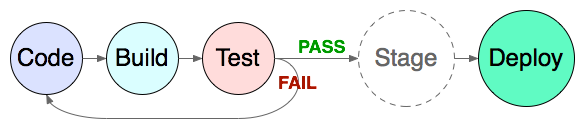|
Make a platform that is aware of changes:
...so that the entire product lifecycle is |
Lifecycle in OpenShift 3:
The Deployment
|
|
Deployment Trigger Policies
|
Manual |
Image change 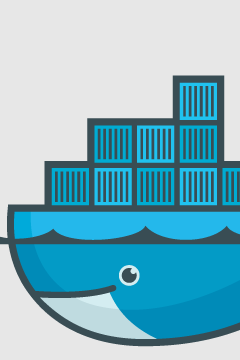 |

|
New Concepts Summary
- Configurations
- Collections of Kubernetes and OpenShift 3 objects
- Parameterized templates
- Post-processed
configs - Builds
- Where is the code coming from?
- How do we turn it into a Docker image?
- Deployments
- When do we deploy?
- How do we deploy?
- What should the deployment look like?
Enough Talking... Let's See It!
Getting Started
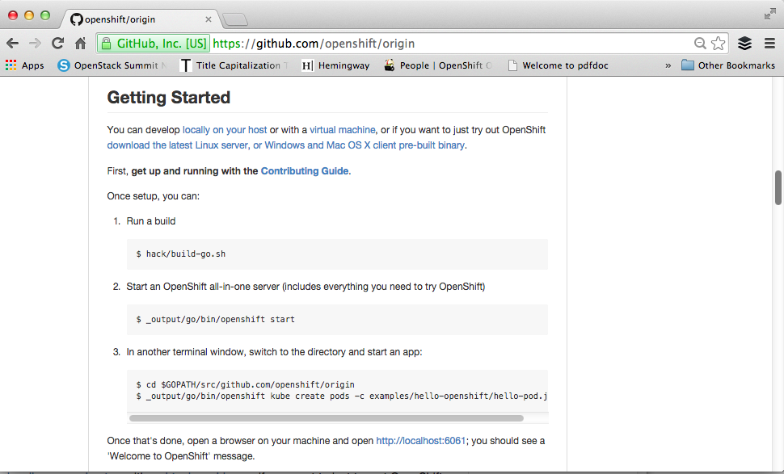Questions?
Thank You!
Learn More:
- Docker: docker.com
- Kubernetes: github.com/GoogleCloudPlatform/kubernetes
- OpenShift 3: github.com/openshift/origin
Presented by
Diane Mueller, Red Hat OpenShift / @pythondj
Daneyon Hansen, Cisco / @daneyonhansen